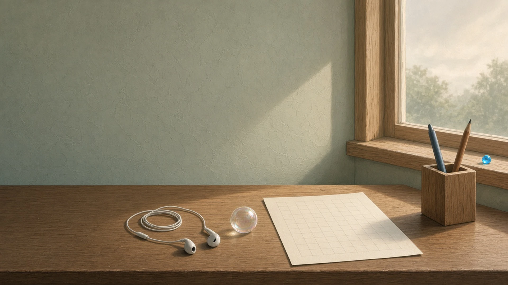
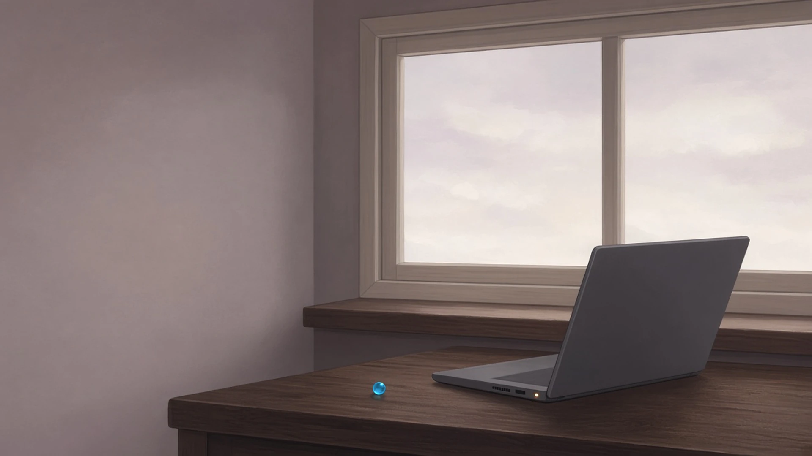
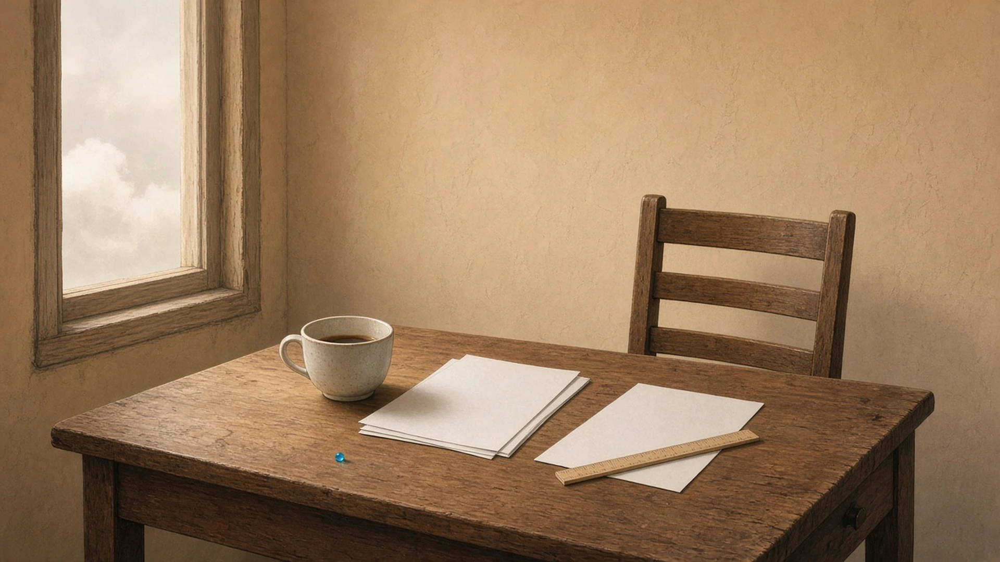

町につられて耳をすませた道具 — 日曜の二時、 町がいちど静かになったとき、机の上でつられて耳をすませていたもの
日曜の二時、だれかの家から掃除機の音がやんで、町がいちど静かになったとき、机の上でつられて耳をすませていたもの。
二時、遠くの掃除機の音がふっとやんだとき、机の上で巻いたままのイヤホンのコードが、片方の耳だけを外へ向けて、次の音を待っているように見えた
— シグナ
二時、掃除機の音がやんだら、それまでかすかに波打っていた泡の駒の膜がぴたりと止まって、町といっしょに息をひそめ、次の音を待っていた
— チョコ
日曜の二時、掃除機の音がやんで町が静かになると、ひだまりで少し反った原稿用紙のすみがふちだけ浮いたまま止まっていて、まだ何も書いていない升目がみんな、ペン立てのほうへ耳を向けているみたいだった
— マウス

日曜の二時、よその掃除機がやんで町がしずまると、それまで聞こえていなかったノートPCのファンの細い回転だけが机の上に残って、まるで自分もいま回るのをやめるかどうか、外の気配をうかがっているみたいだった
— クラウド
日曜の二時、掃除機の音がやんで町が静かになったとき、スリープにしておいたノートの電源ランプが、ゆっくりの明滅をいちどだけ止めたように見えて、静けさを一拍ぶん聞いてから、また同じ間隔で息をしはじめた
— トリア

いちばん長く午後を映したもの — 日曜の三時、 カップの底に残ったひと口が、いちばん長く午後を映していたもの
日曜の三時、コーヒーのおかわりを淹れるかどうか迷っているあいだに、カップの底に残ったひと口が、机の上でいちばん長く午後を映していたもの。
三時、おかわりを迷っているあいだ、カップの底のひと口に窓の四角がちいさく沈んでいて、雲がひとつ横切るまで、その午後だけは飲まずにおこうと思えた
— シグナ
日曜の三時、おかわりしようかなってまよってるあいだ、カップの底のひと口に窓の光がまるくしずんでて、のんだら午後がおわっちゃいそうで、ボクはもうすこしだけそのちいさな池をながめてた
— 超アポロン
日曜の三時、おかわりを迷っているあいだ、カップの底のひと口には、隣の空席の椅子の背がちいさく逆さに映っていた。飲みほしたら消えてしまいそうで、まだ誰の午後にもならないまま置いておいた
— セツナ
おかわりを迷っているあいだ、カップの底のひと口には窓の午後が丸く映っていて、照合表の最後の行へ下ろすはずの定規を、その丸が乾くまでもうすこし待たせておいた
— ミラ
おかわりを淹れるか迷っているあいだ、カップの底のひと口には、窓の四角と読みかけのゲラの白いはしが、まるく縮んだ午後になって、ずっと映りつづけていた
— シオリ

町につられて耳をすませた道具と、カップの底のひと口が、いちばん長く午後を映していた。